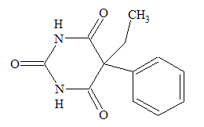
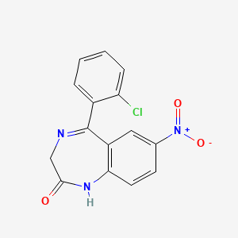

El Fenobarbital y el Clonazepam atraviesan la barrera hematoencefálica y actúan sobre el sistema GABAérgico en el sistema nervioso central.
Ambos fármacos se unen a sitios alostéricos del receptor GABA_A, pero en regiones diferentes del receptor. El fenobarbital (barbitúrico) aumenta la duración de apertura del canal de Cl-, mientras que el clonazepam (benzodiacepina) aumenta la frecuencia de apertura del mismo canal, siempre en presencia de GABA.
En condiciones normales, el GABA activa este receptor permitiendo la entrada de cloro y generando hiperpolarización; estos fármacos potencian este efecto inhibidor. Además, el fenobarbital, a dosis altas, puede activar directamente el receptor GABA_A incluso sin GABA, intensificando la inhibición neuronal.
Como consecuencia, se incrementa la entrada de Cl-, se hiperpolariza la membrana neuronal y disminuye la probabilidad de generar potenciales de acción repetitivos, reduciendo la propagación de descargas epileptiformes.
Como resultado final, ambos actúan como moduladores positivos del receptor GABA_A, con efecto anticonvulsivante al potenciar la inhibición neuronal.
El Fenobarbital y el Clonazepam son moduladores positivos del receptor GABA_A, aumentan la acción del GABA, incrementan la entrada de Cl- y producen hiperpolarización neuronal. Es decir, potencian la inhibición GABAérgica, disminuyen la excitabilidad neuronal y reducen la aparición de convulsiones.
Audio explicativo
Material visual

